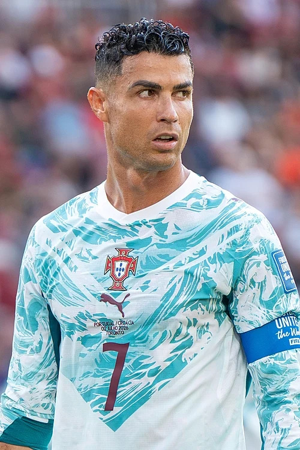

He has played over 200 matches for the Portuguese national team, appearing in 14 tournaments and scoring in 13 of them. He has served as the team's captain since 2008, became its all-time leading scorer in 2014, and set the record for most appearances in 2016. With the national team, he won the 2016 European Championship as well as the UEFA Nations League in 2019 and 2025. He is the first European to score 100 or more goals for his national team.

One of the most recognizable athletes in the world, he was ranked the world's highest-paid athlete by *Forbes* in 2016, 2017, and 2023–2026[20][21][22][23], as well as the world's most famous athlete by ESPN in 2016, 2017, 2018, and 2019. *Time* included Ronaldo in its list of the 100 most influential people in the world in 2014. Between 2010 and 2019, having earned an estimated $800 million according to *Forbes*, he ranked second on the list of the decade's highest-paid athletes, trailing only Floyd Mayweather[24]. In November 2022, he became the first person in history to reach 500 million followers on Instagram[25].